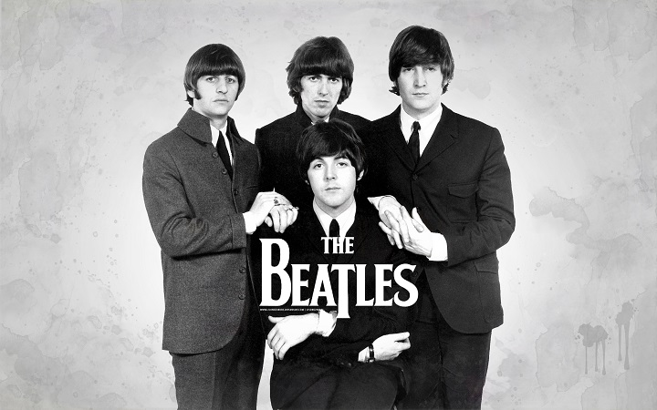
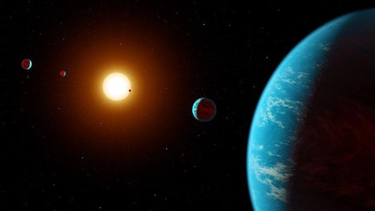

TRIBURO A THE BEATLES
La Orquesta Filarmónica de Medellín celebrará la carrera musical de la agrupación británica The Beatles, quienes marcaron la historia del rock durante la década de los 60s y 70s, durante esta velada la Orquesta estará acompañada por Claudia Gómez (voz y guitarra) y Julián Cardona (guitarra), bajo la dirección de Gonzalo Ospina.

Navegación por los planetas
El planetario de Medellin invita el 23 de diciembre, a las 6:30pm., a un gran espectáculo de música y astronomía, el aire libre con entrada gratuita. Una experiencia Explora, con el patrocinio de Sura y su programa Conciertos al Parque, que será evento protagónico, abierto al público, del Congrwso internacional de la Red Pop. Una hora de expedición al universo que exaltará la emoción como camino...